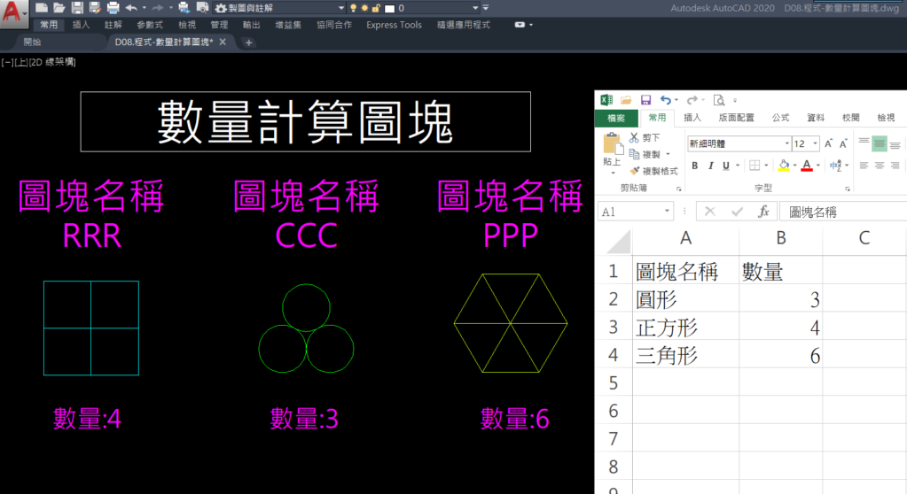

如果你厭倦了
「每天都在做一樣的事，卻越來越忙」
那現在，是時候讓 AutoCAD 自動替你工作。
👇這篇文章有示範講解👇可直接用我的 提示詞 試試
https://www.autocad-tw.com/t30480-topic#190879
**現在起 2026優惠 加入專屬B會員贈送 AI程式入門課程(四個月)**
https://www.autocad-tw.com/t2715-topic
✔ AI 輔助寫程式，不背語法也能上手
https://www.youtube.com/shorts/war03d_B5no
👇 在留言或說明欄看看課程介紹
把時間留給真正有價值的設計，而不是重複勞動。
#AutoCAD #LISP #AI寫程式 #繪圖自動化 #設計師必學 #CAD效率 #工程師人生 #不會程式也能學 #自動化工作